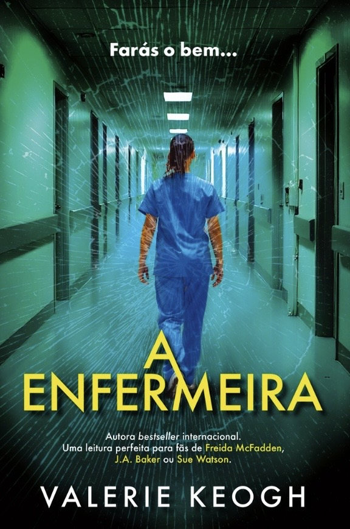
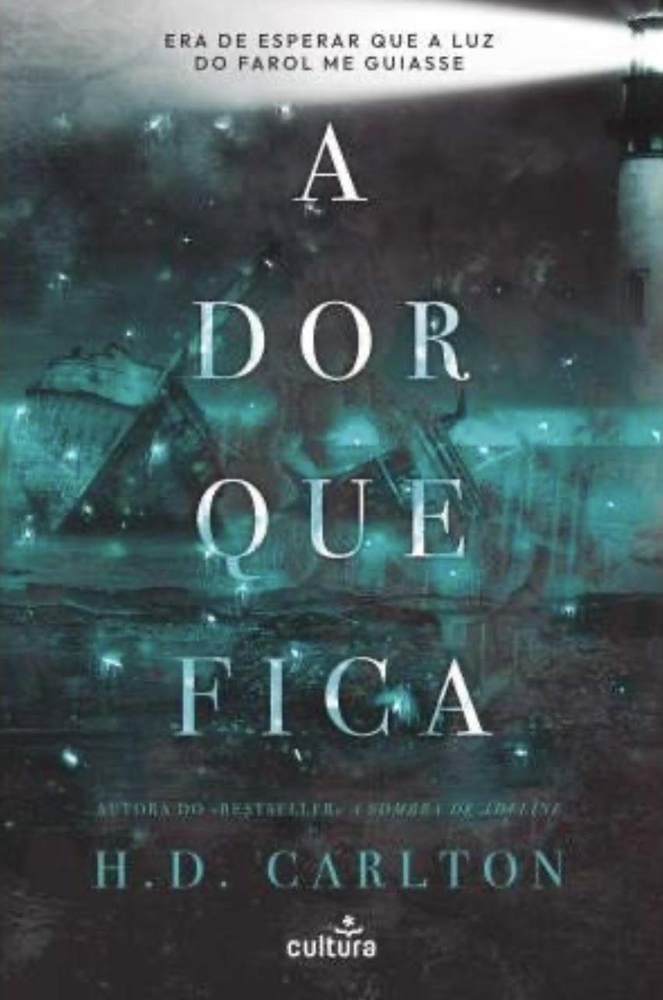
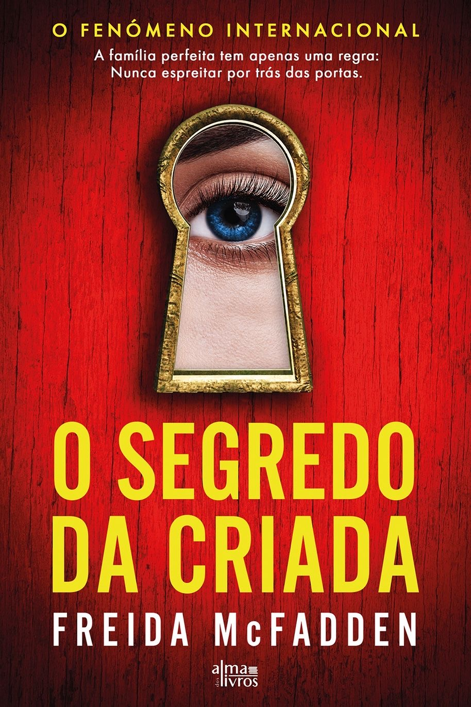
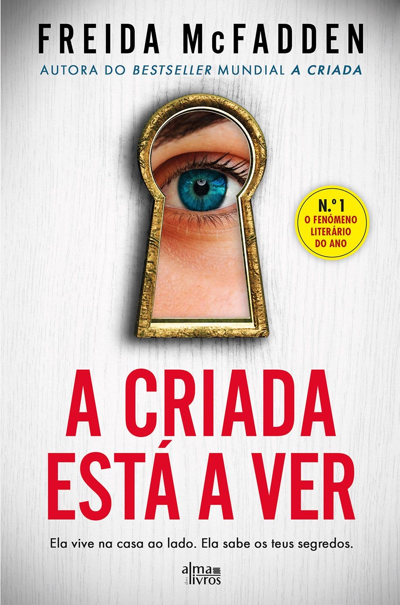
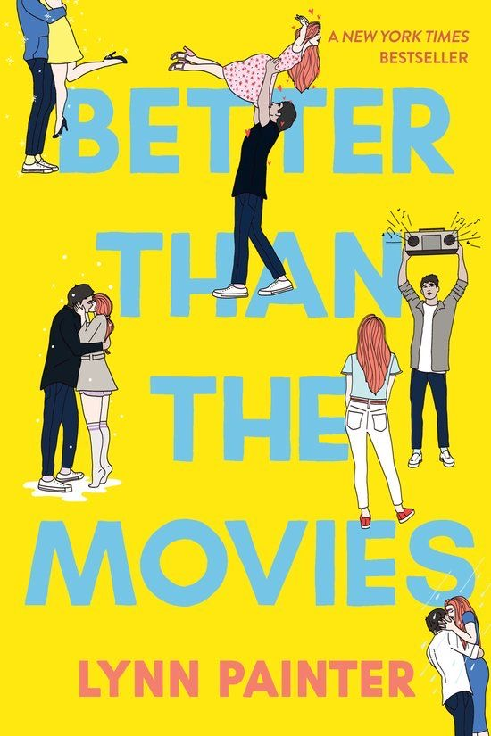
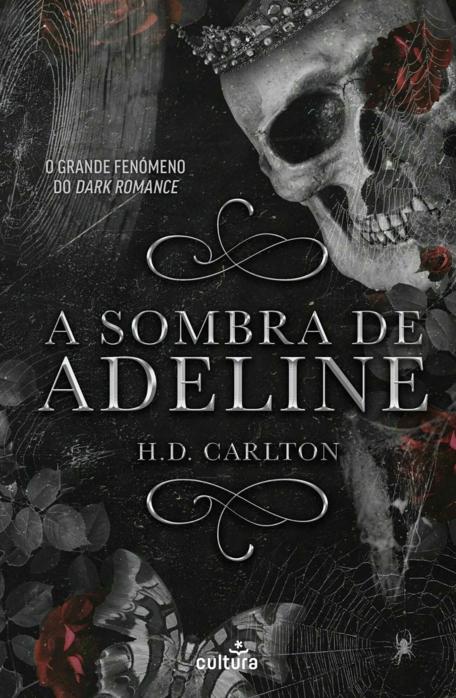

A Dor que Fica
★★★★☆
A Dor que Fica”, da autoria de H. D. Carlton, é uma história sobre obsessão, trauma, dor, amor sombrio e paixão. Sawyer foge de monstros do seu passado, que a atormentam, obrigando-a a isolar-se do mundo. Quando ela conhece Enzo, um italiano charmoso e perigoso, uma atração entre ambos surge logo de imediato, fazendo com que não se consigam resistir um ao outro. No entanto, Sawyer vê-se obrigada a mentir e enganar Enzo para continuar a sobreviver e ele? Ele quer vingança por ter sido enganado por uma bonita ladra. Os dois vêm-se presos um ao outro quando naufragam para uma ilha remota. Na ilha do corvo, apenas habita uma alma, o faroleiro estranho, que lhes dá abrigo. No entanto, ele esconde segredos obscuros e intenções cruéis. Feridas irão reabrir, sentimentos obscuros emergirão e uma obsessão começará a formar-se. Um dark romance tão intenso que nos deixa com água na boca mas também com uma tristeza no coração.

Os Sete Maridos De Evelyn Hugo
★★★★★
Os Sete Maridos de Evelyn Hugo é um livro sobre glamour, amor e mistério. Passa-se na época dourada de Hollywood, em 1950, e conta-nos detalhadamente a história da atriz cubana, Evelyn Hugo, desde a sua infância, carreira, a sua ascensão ao estrelato e a sua vida amorosa. Taylor Jenkins Reid, é uma escritora muito visual, tendo trabalhado numa produtora cinematográfica, tem o dom de fazer com que o leitor consiga visualizar todas as cenas na sua cabeça, é por esta grande qualidade que gosto imenso de todos os seus livros, consigo “ver um filme” com imensa facilidade e de forma intensa, enquanto leio. Cheio de glamour de Hollywood, drama, mistério e plot twists, Taylor Jenkins Reid detalha com pormenores o mundo do cinema americano, respondendo às curiosidades que a maior parte das pessoas tem, em relação à indústria. Começamos a história curiosos sobre a quantidade de casamentos, apenas para percebermos que isto é uma história de sobrevivência e que as características manipuladoras e os planos engenhosos de Evelyn são essenciais para a sua sobrevivência. No início, até pode parecer uma história “superficial” porque é sobre o showbusiness americano, (acredito que era esse o objetivo da autora), mas conta-nos uma história profunda de resiliência por parte de quase todas as personagens. Apercebem-nos rapidamente que este livro é uma historia de amor e questionamo-nos se poderá sobreviver a um “inimigo” comum. É daqueles livros que se devora em poucos dias e que nos deixa com um sentimento amargo por sabermos que nunca vamos ter a mesma experiência de o ler de novo. Confesso que este ficou dos meus livros preferidos, lê-lo foi das melhores experiências que tive, e sempre que me pedem uma recomendação, é este o livro que escolho.

O Comboio dos Orfãos
★★★★★
O livro inesquecível de “O Comboio dos Órfãos” de Christina Baker Kline. Há livros que escolhemos ler… e há livros que, de alguma forma, acabam por nos escolher e por nos marcar mais do que estávamos à espera. O Comboio dos Órfãos foi exatamente isso para mim. Com uma escrita simples e envolvente, este leva-nos a descobrir um capítulo pouco conhecido da história: o das crianças órfãs que eram enviadas de comboio em busca de novas famílias e de uma oportunidade de vida melhor, em busca de amor e cuidado. Baseado em testemunhos reais da verdadeira história por detrás da vida destas tantas crianças. Ao longo da leitura, é impossível não sentir um aperto no coração ao perceber a dureza dessa realidade, especialmente por envolver crianças muitas vezes tratadas de forma desumana. A narrativa alterna entre o passado e o presente, criando um paralelismo interessante com uma jovem da atualidade que, de forma inesperada, acaba por se cruzar com a vida da protagonista. À medida que as memórias vão sendo partilhadas, percebemos que esta não é apenas uma história dura, é também uma história de coragem, resiliência e esperança, com partes muito agoniantes que nos fazem sentir um misto de emoções . Apesar dos momentos emocionalmente pesados, é um livro de leitura fluida, daqueles que nos fazem querer continuar sempre mais um capítulo. Foi também um livro que me fez sentir muita compaixão pela personagem principal e pelo caminho difícil que teve de percorrer até conseguir encontrar, finalmente, alguma felicidade. Um drama histórico marcante, que nos faz refletir sobre o passado e sobre a incrível capacidade humana de resistir, mesmo quando a vida parece tirar quase tudo.

Dança do Mar Estrelado
★★☆☆☆
A “Dança do Mar Estrelado” tem um conceito e uma arte de capa que me chamaram a atenção. Confesso que não adoro ler ficção, pois sinto que tenho dificuldade em acertar no subgénero que me agrada, arrisquei com este e, mais uma vez, a escolha foi ao lado. A história acompanha Lila, uma bailarina que, após cometer um erro no palco e cair, perde as estribeiras. Devido à pressão constante que sempre sofreu, ela acaba por descarregar na mãe de forma violenta. Como consequência, os pais enviam-na para a Ilha Luna para viver com a tia. A ilha é mágica, repleta de mitos sobre a existência de anjos. O conceito é interessante, sendo baseado no mito de Hades e Perséfone. Por isso, a história dá a ideia de ser um romance, mas Damien mal aparece e, quando surge, as cenas são pouco exploradas. O foco narrativo reside quase inteiramente nas feridas internas de Lila. Grande parte do livro resume-se à protagonista a tentar perceber o que se passa à sua volta, respondendo às próprias dúvidas sozinha, ninguém lhe dá respostas, ela simplesmente tem "palpites" que, por acaso, estão sempre certos. Não existe um desenvolvimento completo entre o par romântico. A relação evolui muito rápido, o que me impediu de criar uma ligação com o casal. A evolução de Lila pareceu-me repentina. Num momento ela é extremamente insegura e, logo a seguir, transforma-se numa mulher decidida. Essa mudança soou "do nada", sem um processo de amadurecimento credível. A escrita da autora foca-se nos pontos errados. Há um detalhismo excessivo em roupas, cheiros e cenários, enquanto as cenas de ação são despachadas rapidamente. Isso torna a leitura aborrecida nos momentos de transição e frustrante nos momentos de clímax, que passam num fôlego. No geral, a história e a caracterização das personagens pareceram-me bastante forçadas.

A Criada
★★★★☆
Há livros que nos devoram. A trilogia A Criada é claramente deste tipo. Com uma escrita viciante, envolvente e cheia de tensão, Freida McFadden consegue prender-nos desde a primeira página até ao último suspiro de cada capítulo, daqueles que dizemos “só mais um” e, de repente, já são 3 da manhã. “A Criada” O primeiro livro é, sem dúvida, o grande destaque da trilogia. Original, inesperado e com um ritmo que não abranda, apresenta-nos uma história que parece simples… até deixar de o ser. O verdadeiro brilho está na forma como tudo se transforma, levando-nos a questionar absolutamente tudo e todos. O plot twist final não é apenas surpreendente é daqueles que nos obriga a voltar atrás mentalmente e perceber o quão enganados estivemos, faz nos questionar todos os pequenos detalhes que lemos ao longo da história e como não conseguimos perceber antecipadamente a verdade.

O Segredo da Criada
★★★★☆
Às vezes, os maiores segredos são aqueles que escolhemos não ver

A Criada Está a Ver
★★★★☆
Há olhares que dizem mais do que qualquer verdade alguma vez dita

O Monte dos Vendavais
★★★★★
Um clássico intenso que não pede desculpa: “Wuthering Hights”. Há livros que gostamos… e há livros que nos marcam. O Monte dos Vendavais, de Emily Brontë pertence claramente à segunda categoria. Publicado em 1847, este clássico da literatura inglesa continua a ser uma leitura poderosa, sombria e emocionalmente intensa, daquelas que ficam connosco muito depois de virarmos a última página. Uma das primeiras coisas que notei ao começar foi a diferença na escrita. Não estava muito habituada à literatura inglesa mais antiga, e no início sente-se bem a distância em relação aos livros modernos. A linguagem é mais densa e o ritmo diferente um pouco teatral até. No entanto, essa estranheza inicial desaparece rapidamente. À medida que avançamos na leitura, percebemos que esta história simplesmente não funcionaria da mesma forma com uma escrita mais atual. Há algo nesta forma clássica de narrar que encaixa perfeitamente na atmosfera do livro. E que atmosfera! A atmosfera gótica e sombria acompanha perfeitamente a tragédia da narrativa. As personagens são intensas, complexas e, muitas vezes, difíceis de gostar. Em vários momentos mostram o lado mais feio da natureza humana, o que torna a história crua e nada romantizada e é isso que a torna tão marcante. Catherine Earnshaw e Heathcliff são duas personagens impossíveis de esquecer. A relação entre eles é obsessiva, possessiva e profundamente tóxica, mas existe ali uma forma de amor ? Na minha opinião sim existe. Não a forma de amor ideal, talvez um pouco desfigurado, mas com uma ligação intensa que parece unir os dois de forma inevitável. A narrativa é detalhada e consegue transportar-nos facilmente para aquele tempo e espaço, acompanhando diferentes gerações e tornando a história ainda mais envolvente. É um livro que prende porque há sempre a curiosidade de continuar a ler para descobrir o rumo das consequências das escolhas dos personagens. No final, apesar de toda a intensidade, tristeza, vingança e raiva que atravessam a história, existe um certo alívio ao ver a narrativa ir para algo mais próximo da paz. É um livro duro, intenso e memorável e recomendo muito a leitura para quem quer experimentar um clássico que realmente fica connosco.

O Namorado
★★★★★
Nem todos os monstros parecem assustadores - alguns parecem perfeitos. “O Namorado”, de Freida McFadden, é um thriller envolvente que prende o leitor desde a primeira página. A autora faz-nos questionar até onde se é capaz de ir por amor e o lado obscuro de cada personagem. Com capítulos curtos e um ritmo rápido, é daqueles livros que se lê quase de uma assentada. Como já é habitual nos thrillers de Freida McFadden, a história está cheia de reviravoltas e momentos que fazem o leitor repensar tudo o que achava que sabia. Um thriller viciante, cheio de tensão e mistério, perfeito para quem gosta de histórias onde nada é o que parece.

Isto Não Acontece nos Filmes
★★★★☆
Este é um daqueles livros que nos lembram por que é que gostamos tanto do género romance. “Isto Não Acontece nos Filmes”, de Lynn Painter, é exatamente o tipo de leitura leve, divertida, com questões emocionais mas reconfortante. A história acompanha uma protagonista completamente apaixonada por filmes românticos e por todas as ideias de amor em que eles nos fazem acreditar. Entre grandes referências a clássicos do cinema que todos conhecemos e momentos que parecem saídos diretamente de um filme, o livro brinca muito bem com o contraste entre aquilo que imaginamos que o amor deveria ser e aquilo que ele realmente acaba por ser. Com uma dinâmica enemies to lovers cheia de química crescente, a narrativa prende e flui de uma forma que nos faz virar páginas quase sem dar por isso. Apesar de ter aquele toque de cliché que reconhecemos neste género, a autora consegue dar-lhe um outro ar, mais fresco e juvenil . Com atenção aos detalhes de forma inteligente, seja na construção das personagens, nas suas inseguranças e traumas, ou na forma como o romance se vai desenvolvendo. Não é uma história lenta, o que torna a leitura ainda mais fluida e envolvente, e as personagens são descritas de forma tão carismática que é fácil imaginá-las como se estivéssemos mesmo a ver um filme. No fundo, este é um livro sobre expectativas, sobre crescer e sobre perceber que, por vezes, o amor que achamos que queremos não é exatamente aquele de que precisamos. E muitas vezes ele pode estar muito mais perto do que imaginamos. Uma leitura rápida, doce, jovem e muito confortável, daquelas perfeitas para quando só queremos uma história romântica que nos faça sorrir.

A Sombra de Adeline
★★★★★
O livro Haunting Adeline, de H. D. Carlton, é sem sombra de dúvida o livro mais erótico e sombrio que já li até aos dias de hoje. Este dark romance intenso e controverso acompanha Adeline, uma jovem escritora que acaba de herdar a antiga casa de família - uma mansão isolada, cheia de história e mistério. Quando Zade se depara com Adeline, desenvolve de imediato uma obsessão por ela. Zade então decide que ela será sua, quer ela queira, quer não. Adeline começa a sentir desejos que nunca imaginou explorar, levando-a a questionar os próprios limites, vontades e fantasias. Esta é uma história repleta de desejo, obsessão e erotismo, o que a torna tão irresistível para os leitores de dark romance.